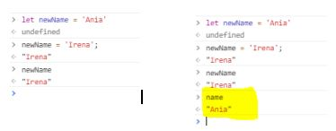
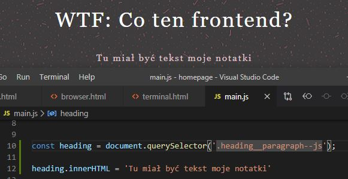

Typy danych i immutability
Zmienna to takie połączenie z naszym wszechświatem wartości.
Zmienna to nie wartość, zmienna wskazuje nam na jakąś wartość.
Używamy camelCase do zapisywania zmiennych
Sposoby zapisywania zmiennych w JS, sposoby definicji zmiennych:
LET
CONST
VAR - od tego się trochę odchodzi
Can I use…?
CONST
const - zmienne mające stałe połączenie z jedną wartością, tego połączenia nie możemy zmienić

Odpytujemy co się kryje pod połączeniem tej zmiennej z jaką wartością.
name = ‘Irena’ dostaję błąd bo nie mogę zmienić zmiennej, która jest stała.
Const to jest stałe wiązanie między nazwą naszej zmiennej do konkretnej wartości i tego połączenia nie możemy edytować.
LET
let - zmienne, których połączenie możemy przepinać, ale definiujemy tylko raz, zmienna którą możemy zmieniać, pozwala nam na zmianę przepisania/przypisania
Przepięcie, edycja połączenia między zmienną a wartością, to nie jest nadpisanie wartości Ania, bo ta wartość już istnieje w moim wszechświecie wartości. Można też podpiąć cyfry i też zadziała.

Jak wypisze teraz name to dostanę Ania.
Definiowanie zmiennych w JS to jest tworzenie takiego połączenia z jakąś wartością.
Nazwę zmiennej definiujemy tylko raz; możemy zmieniać przypisanie naszej zmiennej do innej wartości i to połączenie możemy edytować.
Edytujemy zmienne tak jakbyśmy przepinali wtyczkę z gniazdka do gniazdka. Mamy cały czas jedno urządzenie a jest przypięte do różnych gniazdek w mieszkaniu. Ładowarkę możemy przypinać do różnych gniazdek i to działa. Wtedy możemy zapytać gdzie jest telefon (nasza zmienna) np. wpięty w gniazdko w sypialni, albo w salonie.Nie zmieniamy gniazdek bo one fizycznie cały czas istnieją. Zmieniamy miejsce, w którym nasz telefon jest podpięty.
Zmienne w JS są jak młody pelikan “łykną” wszystko. Nie interesuje go czy to będzie liczba czy wyraz. Do zmiennej możemy przypisać wszystko kiedy ją inicjujemy.
Typy proste w JS (primitives):
- String - tekst, otaczamy ‘ lub “ zalecane ‘
- Number - liczba
- Bigint - duża liczba większa niż 2 do 53
- boolean - true lub false, wartości logiczne
- null - wartość celowo niezdefiniowana, celowo tak definiujemy żeby nie dostać błędu albo chcemy później nadpisać
- undefined - brak definicji
- *symbol - tworzy “unikalne opakowanie”
Jakiego typu jest zmienna? typeof
undefine wskazuje, że nie ma takiej zmiennej, null wskazuje na nulla, bo tak był zdefiniowany.
Przykład:

Stworzona nowa zmienna y i przypisuje do tej zmiennej x, y tworzy połączenie do 10
Jeśli zmienie x na 20 to y się nie zmieni i zostanie 10 why?
= nie tworzy nowych zmiennych, on tworzy połączenia, które później nam zwraca.
Nie możemy zmieniać wartości primitive values w JS. To co zmieniamy to połączenie między nimi, a zmiennymi IMMUTABILITY.
Edytujemy połączenia a nie same wartości. Wartości samych w sobie nie możemy zmieniać.
Kiedy myślimy, że zmieniamy wartość to tak naprawdę zmieniamy połączenie między nazwą zmiennej a nową wartością.
DOMowe przedszkole
DOM- Document Object Model
Plik HTML to nie DOM. To co widzimy po wyświetl źródło strony to nie DOM. Ale to co widzimy w DevTools to już DOM!
Nasz plik HTML z edytora to jakby instrukcja, przeglądarka dostaje tego HTMLa, a to co widzimy w DevTools, to już skręcony mebel, DOM.
DOM to “złożony” w przeglądarce HTML
JS love DOM
DOM to miejsce gdzie możemy się komunikować z naszą stroną internetową i za pomocą JS dostawać się do jej elementów i je modyfikować. JavaScript może modyfikować DOM
document.querySelector(‘.selector’) - funkcja querySelector zwraca node (węzeł) z HTML-a, selektor jest zapisywany zgodnie z css
Chcę sprawdzić czy mogę podpiąć się do mojego nagłówka np.

Przypinam się konkretnie do tego elementu, wartością do której się przypinam jest ten element, wypisuje się w konsoli nie tylko sam element ale wszystko co zawiera też. Podobnie sie używało w jQuery, to z tym dolarem.

Metoda, żeby dostać się do elementów w HTMLu! Są też inne ale ta jest spoko :D.
Aleeee, chcemy się dostać do elementu za pomocą BEMa, bo co np jak zmienimy klasy itp?
Tworzymy klasę, modyfikator do klasy, np. header--js podstawiamy to zamiast konkretnego selektora. korzystając z BEM - tworzymy dodatkową klasę z modyfikatorem --js (ułatwia identyfikację / usuwa potencjalne problemy). Nie stylujemy po tym, dodajemy tylko, jeśli jakiś element ma mieć coś wspólnego z JS

JavaScript może modyfikować treść:

Zmienia mi się treść nagłówka, została nadpisana ta z HTMLa przez JS. Dlatego to jest DOM bo uwzględnia wszystkie zmiany, w HTML dalej jest pierwotny nagłówek ale JS go zmienił i w przeglądarce oraz DevTools jest taki jak po zmodyfikowaniu JSem, po zastosowaniu skryptu. Jakby co to nie jest typ prosty.
Dalej nam pokaże nagłówek zmieniony:

innerHTML pozwala na wypisanie treści ale też na podmienienie jej (jeżeli dokonamy przypisania na pomocą “=”).
Możemy też np. Hej wrzucić w span hej, to się pokaże w Devtools.
Możemy modyfikować treści na stronie. Nie jest to super popularna praktyka ale dobrze wiedzieć, że w ten sposób można się odwoływać do elementów, które są w kodzie HTML za pomocą JS i coś z nimi robić, np. podmiana treści.

To sobie napisałam w skryptach. Wewnętrzny HTML ma wskazywać na inną wartość.Jak używamy console to wtedy jest widnoczne w konsoli.